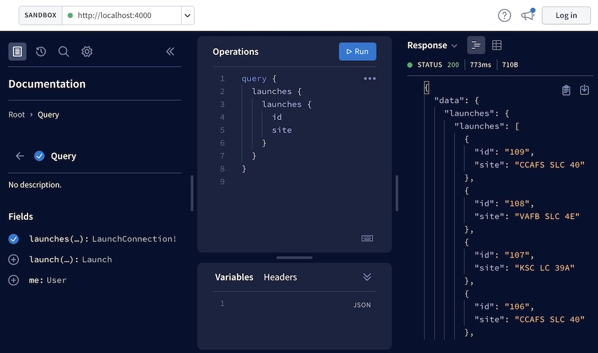

GraphQL is a query language. It is used for APIs and includes the runtime for query
execution. Its development began in 2012 at Facebook. However, it was only in 2015 that
it was made open source.
Many large organizations, including Github, Facebook, Pinterest, Intuit, Coursera,
Shopify, DailyMotion, Yelp, and others, use GraphQL.
A query language, in simple terms, uses queries to retrieve data from a database.
GraphQL is a query language that is used to create APIs.
GraphQL is not a database technology. It is a query language for APIs, not a database
query language.
GraphQL queries return JSON responses. The response is determined by the query used in
the request.
Many languages, including JavaScript, Python, Java, PHP, Haskell, Ruby, C#, Scala, Go,
Elixir, Erlang, R, and Clojure, can be used to implement GraphQL servers.
GraphQL can provide the client with only the information that is required. Even if the
object model has a large number of fields, the client can only request the ones that are
required.
When we need to request specific data in GraphQL Queries and Fields, we use arguments.
Intermediat
Model View Controller is a software design pattern that separates the business logic
(model) from the presentation layer or the user interface. It divides the application
into logical components - Model, View, and Controller. Each component focuses on
different developmental aspects of the application. It is developed by Trygve Reenskaug.
Authentication is the process of claiming one's identity. Authentication in GraphQL can
be accomplished using common patterns such as OAuth. OAuth is an open protocol that
allows secure authentication from the web, mobile, and desktop applications in a simple
and standard manner.
Authorization, on the other hand, is a process used to define permission rules that describe the access rights of particular users and user groups to specific parts of the system. When implementing authorization in GraphQL, it is recommended that any data access logic be delegated to the business logic layer rather than handled directly.
Authorization, on the other hand, is a process used to define permission rules that describe the access rights of particular users and user groups to specific parts of the system. When implementing authorization in GraphQL, it is recommended that any data access logic be delegated to the business logic layer rather than handled directly.
Over-fetching is when the client receives too much or extra data in response to an API
request. Over-fetching results in a lot of extra data in the response you don't use.
Overfetching increases the payload size unnecessarily.
Overfetching increases the payload size unnecessarily.
Under-fetching is a response in which the client receives insufficient data. The
under-fetching response does not have enough information with a call to an endpoint, so
you must call a second endpoint or multiple API calls to complete your request.
GraphQL supports three operation types: query, mutation, and subscription. The query
used for requesting is a read operation, the mutation is used for write operations, and
the subscription is used to listen for any changes to the data. If the client subscribes
to that event, the server sends a notification message after data changes.
The primary distinction between REST and GraphQL is that GraphQL does not deal with
dedicated resources; instead, everything is regarded as a graph and thus is connected
and can be queried to app-specific needs.
The difficulty in maintaining server-side caching remains a concern with GraphQL,
particularly when compared to REST. Because the data format is guaranteed not to change,
caching data for each endpoint is simple with REST. GraphQL, on the other hand, makes it
impossible to anticipate what a client will want next; as a result, a cache layer seated
behind the API makes little sense. As a result, server-side caching in GraphQL remains a
challenge.
The fragment is used when a GraphQL query is extensive and consists of reusable
components. You can use the reusable portion to build a fragment that you can then use
in the query. The fragment concept was developed to make it easier to organize code and
reduce duplication.
An interface is used in GraphQL to list the standard fields of a GraphQL object. Other
objects can also use this interface to inherit properties.
In GraphQL, we must sometimes represent multiple objects, which is why the union is
used. A union allows the user to specify more than one type as a return type.
In GraphQL, an enum or enumeration type is a particular type of scalar used to declare a
type, including a detailed list of allowed values.
A resolver is used in GraphQL to handle queries and generate GraphQL responses.
1. A need for more efficient data loading has been created by increased mobile use.
2. A variety of different clients: REST makes it difficult to create an API that meets their needs as it returns a fixed data structure.
3. Requirements for faster feature development: To make a change on the client side of REST, we always have to modify the server side to accommodate it which slows down product iterations.
4. Great fit for complex systems and microservices.
5. Fetching data with a single API call.
6. No over- and under-fetching problems.
7. Tailoring requests to your needs.
8. Validation and type checking out-of-the-box.
9. API evolution without versioning.
10. Code-sharing: GraphQL fields used in different queries may be shared at a higher component level forad
2. A variety of different clients: REST makes it difficult to create an API that meets their needs as it returns a fixed data structure.
3. Requirements for faster feature development: To make a change on the client side of REST, we always have to modify the server side to accommodate it which slows down product iterations.
4. Great fit for complex systems and microservices.
5. Fetching data with a single API call.
6. No over- and under-fetching problems.
7. Tailoring requests to your needs.
8. Validation and type checking out-of-the-box.
9. API evolution without versioning.
10. Code-sharing: GraphQL fields used in different queries may be shared at a higher component level forad
GraphQL can provide the minimum amount of data that is required by the client. Even if
the object model contains a lot of fields, the client can request only the required
fields
A client can request only the required data in GraphQL. It makes the payload size
smaller than any other network request. In low network areas, small payload network
requests can be executed faster.
a) GraphQL is a query language, but REST is not.
b) REST uses different routes for different requests, but GraphQL doesn’t have any routes.
c) GraphQL uses query, mutation and subscription but REST uses GET, PUT, POST, DELETE and PATCH.
d) RSET is server-driven application state, but GraphQL is contract-driven by nature.
e) REST only communicates on HTTP or HTTPS, While GraphQL server communicate over HTTP, HTTPs, TCP, WebSocket, FTP.
b) REST uses different routes for different requests, but GraphQL doesn’t have any routes.
c) GraphQL uses query, mutation and subscription but REST uses GET, PUT, POST, DELETE and PATCH.
d) RSET is server-driven application state, but GraphQL is contract-driven by nature.
e) REST only communicates on HTTP or HTTPS, While GraphQL server communicate over HTTP, HTTPs, TCP, WebSocket, FTP.
SDL stands for Schema Definition Language. It is used for writing schemas. This is the
language that we use to write GraphQL schemas.
Mutation is used for the write operation. A mutation is used for operations like add,
delete and edit data.
In GraphQL, the subscription is used for listening for any data changes. The server sends a notification message to the client after any data changes, if the client is subscribed to that event.
A resolver is a function that returns data for a particular field. Resolver functions
return data in the type and shape specified by the schema.
Enums are basically a special type we can use to enumerate all possible values in th
field.By using enums we are adding another kind of validation to existing GraphQL schema
Overfetching is extra data for an API request It increase payload size. Underfetching is
the opposite of overfetching.It means that not enough data is included in an API
response. it requires multiple API calls to fetch the complete data.
Fields are ‘key’s of an object that we use in a GraphQL query. For example :
{
student{
name
age
}
}
In this query, ‘name’ and ‘age’ are fields.
we can pass one argument to request for specific data based on it. For example :
{
student(id: "100"){
name
age
}
}
Here, we are passing the ‘id’ as an argument. It will return the ‘name’ and ‘age’ of
‘student’ with ‘id’ equals to ‘100’.
Instead of writing arguments in a query string, we can use variables and pass any
arguments to these queries directly. For example :
query studentQuery($id : Int)
{
student(id : $id){
name
}
}
In this example, we can pass one new variable each time.
__typename is a meta field. If the client doesn’t know the type getting back from a GraphQL service, GraphQL allows us to use __typename to get the name of the object type.
GraphQL supports five scalar types: Int, Float, String, Boolean and ID.
Apollo platform is an implementation of GraphQL that includes two open sourced libraries to create client and server. The client is used to fetch data from a GraphQL server and the server is used to create an API for GraphQL client.
We can create GraphQL server on any programming language like Node.js or python. We can host it like any other servers.
We can implement authentication like OAuth in GraphQL.
A successful GraphQL query is supposed to return a JSON object with a root field called "data". If the request fails or partially fails (e.g. because the user requesting the data doesn’t have the right access permissions), a second root field called "errors" is added to the response:.
{
"data": { ... },
"errors": [ ... ]
}
Technically any GraphQL query could be implemented to cause a data write. But there is a convention that any operations that cause writes should be sent explicitly via a mutation.
Besides the difference in the semantic, there is one important technical difference:
Query fields can be executed in parallel by the GraphQL engine while Mutation top-level fields MUST execute serially according to the spec.
Besides the difference in the semantic, there is one important technical difference:
Query fields can be executed in parallel by the GraphQL engine while Mutation top-level fields MUST execute serially according to the spec.
when we talked about the definition of the info: String! field and said the exclamation mark means this field could never be null.
Step 1: Create a new project
1. From your preferred development directory, create a directory for a new project and cd into it:
mkdir graphql-server-example
cd graphql-server-example
2. Initialize a new Node.js project with npm (or another package manager you prefer, such as Yarn):
npm init --yes
npm pkg set type="module"
Step 2: Install dependencies
Applications that run Apollo Server require two top-level dependencies:
npm install @apollo/server graphql
Set up with JavaScript
If you are using JavaScript, create a index.js file that will contain all of the code for our example application:
touch index.js
Now replace the default scripts entry in your package.json file with these type and scripts entries: pckage.json
{
// ...etc.
"type": "module",
"scripts": {
"start": "node index.js"
}
// other dependencies
}
Step 3: Define your GraphQL schema
Every GraphQL server (including Apollo Server) uses a schema to define the structure of data that clients can query. In this example, we'll create a server for querying a collection of books by title and author.index.js
Open index.js in your preferred code editor and paste the following into it:
import { ApolloServer } from '@apollo/server';
import { startStandaloneServer } from '@apollo/server/standalone';
// A schema is a collection of type definitions (hence "typeDefs")
// that together define the "shape" of queries that are executed against
// your data.
const typeDefs = `#graphql
# Comments in GraphQL strings (such as this one) start with the hash (#) symbol.
# This "Book" type defines the queryable fields for every book in our data source.
type Book {
title: String
author: String
}
# The "Query" type is special: it lists all of the available queries that
# clients can execute, along with the return type for each. In this
# case, the "books" query returns an array of zero or more Books (defined above).
type Query {
books: [Book]
}
`;
Step 4: Define your data set
Now that we've defined the structure of our data, we can define the data itself.Apollo Server can fetch data from any source you connect to (including a database, a REST API, a static object storage service, or even another GraphQL server). For the purposes of this tutorial, we'll hardcode our example data.
Add the following to the bottom of your index.ts file:
const books = [
{
title: 'The Awakening',
author: 'Kate Chopin',
},
{
title: 'City of Glass',
author: 'Paul Auster',
},
];
Step 5: Define a resolver
We've defined our data set, but Apollo Server doesn't know that it should use that data set when it's executing a query. To fix this, we create a resolver.Resolvers tell Apollo Server how to fetch the data associated with a particular type. Because our Book array is hardcoded, the corresponding resolver is straightforward.
Add the following to the bottom of your index.js file:
// Resolvers define how to fetch the types defined in your schema.
// This resolver retrieves books from the "books" array above.
const resolvers = {
Query: {
books: () => books,
},
};
Step 6: Create an instance of ApolloServer
We've defined our schema, data set, and resolver. Now we need to provide this information to Apollo Server when we initialize it.Add the following to the bottom of your index.js file:
// The ApolloServer constructor requires two parameters: your schema
// definition and your set of resolvers.
const server = new ApolloServer({
typeDefs,
resolvers,
});
// Passing an ApolloServer instance to the `startStandaloneServer` function:
// 1. creates an Express app
// 2. installs your ApolloServer instance as middleware
// 3. prepares your app to handle incoming requests
const { url } = await startStandaloneServer(server, {
listen: { port: 4000 },
});
console.log(`🚀 Server ready at: ${url}`);
Step 7: Start the server
We're ready to start our server! Run the following from your project's root directory:
npm start
You should now see the following output at the bottom of your terminal:
🚀 Server ready at: http://localhost:4000/
Step 8: Execute your first query
We can now execute GraphQL queries on our server. To execute our first query, we can use Apollo Sandbox.Visit http://localhost:4000 in your browser, which will open the Apollo Sandbox:
